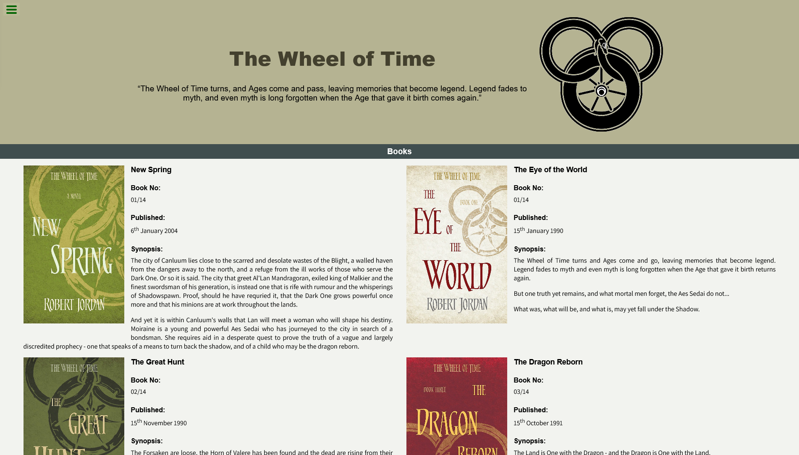
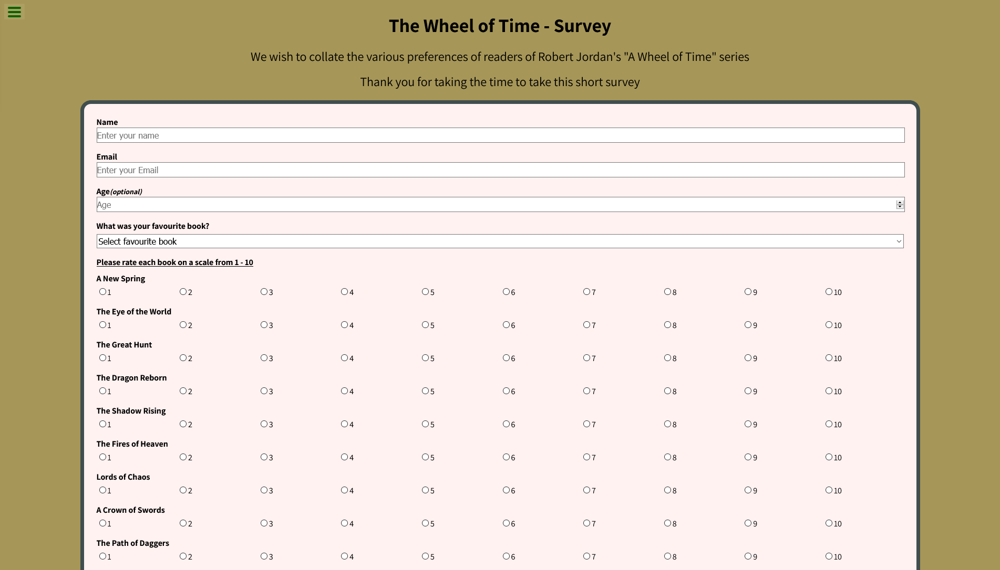
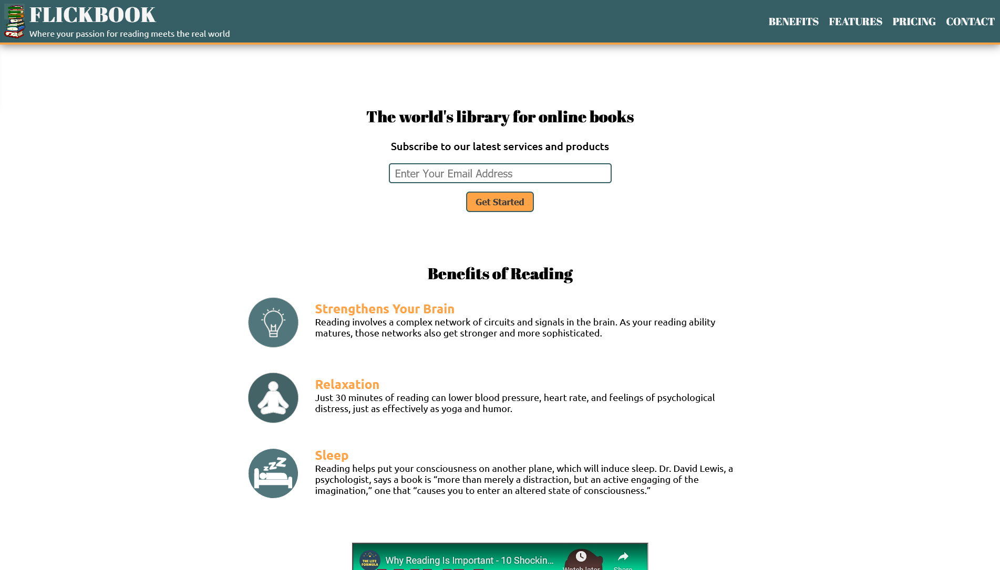
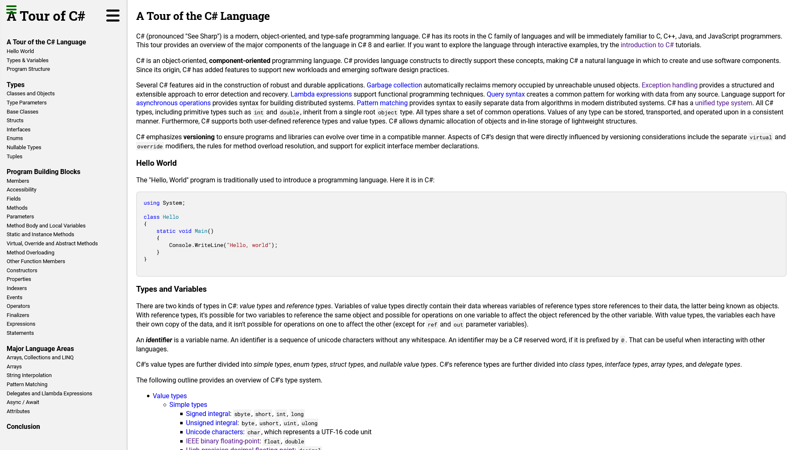

Home
Work
About
Contact
Hello I am David
a web developer and applications programmer
Here are a few of the projects I have completed
1
2
3
4
Tribute Page

Survery Page

Product Landing Page

Technical Documentation Page
